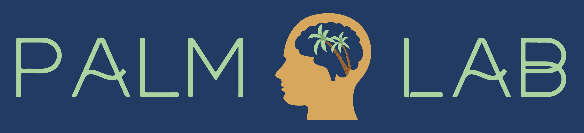

Lab Manual for the PALM Lab
Last updated on 04-06-2024
Welcome!

This is the lab manual of the Perception, Attention, Learning and Memory Lab at the University of Adelaide, run by Dr William Ngiam. The PALM Lab is a cognitive psychology and neuroscience lab researching how we keep information in mind for ongoing cognition. You can find out more about our research and team on our lab website.
This lab manual is mainly written for prospective or current members of the PALM Lab, but is shared publicly as a potentially helpful resource for conducting research and/or writing a lab manual. Each chapter contains guidelines, policies, and useful resources for how the lab conducts our research. It is a continual work in progress, as the way we conduct our scientific research evolves. Please feel free to share your feedback by contacting us via email and suggestion revisions by submitting an issue to this lab manual’s Github repository.
Thank you to the following who inspired this lab manual:
The PALM Lab Manual written by William Ngiam and members of the PALM Lab is licensed under CC BY-NC 4.0